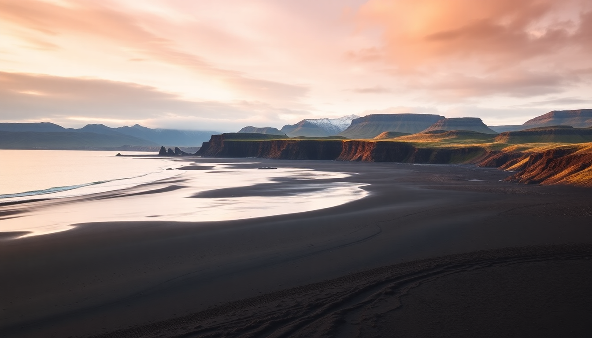

Iceland’s Best Beaches: Black Sand and Hot Springs Guide

I spent two weeks driving the Ring Road with a rental SUV, chasing Iceland’s coastline. I thought all beaches would be black sand and freezing. I was wrong. Some were warm enough to soak in, others were dangerous but stunning, and a few were tourist traps I’d skip next time. Here’s what I actually found worth your time.
What makes Reynisfjara the most famous black sand beach?
Reynisfjara, near Vik, is the poster child for Icelandic beaches. The black sand is volcanic basalt ground fine, and the stacked basalt columns at the cave entrance look like organ pipes. I walked that stretch at sunset, and the contrast of white foam on black sand is real.
But here’s the warning locals repeat: sneaker waves. They come without warning and have pulled people out to sea. I kept my back to the cliffs, not the water, and never stepped below the high-tide line. The parking lot fills by 10 a.m., so go early or late.
- Reynisfjara – main black sand beach, free parking, no facilities
- Dyrhólaey – nearby cliff arch, good viewpoint over the beach
- Hálsanefshellir Cave – the basalt column cave at the eastern end
- Vik – closest town, grab soup at Sudur-Vik after the beach
Is the black sand beach in Vik itself worth visiting?
Vik has its own black sand beach right in town, called Vik Beach or Black Beach. It’s smaller and less dramatic than Reynisfjara, but way safer. No sneaker wave risk because it’s sheltered. I walked it one morning before breakfast, and the only other person was a local jogger.
The sand is more gravelly than Reynisfjara’s, and the view west toward Reynisfjara mountain is solid. But if you only have time for one black sand beach, drive the extra 10 minutes to Reynisfjara. Vik Beach is a backup, not the main event.
- Vik Beach – safe, easy access, good for a quick stop
- Reynisfjara – better views, more dramatic, higher risk
Where can I find hot spring beaches near Reykjavik?
The Blue Lagoon gets all the press, but I skipped it. The price is high, the crowds are dense, and it’s a man-made pool using geothermal runoff. Instead, I drove 45 minutes from Reykjavik to Reykjadalur Hot Springs, a natural river where you hike 45 minutes up a valley to find steaming pools.
The hike starts at Hveragerði, a small town with a geothermal greenhouse. I parked at the trailhead, walked up the dirt path, and found a series of rock-lined pools where the river temperature hits 38–40°C. No entry fee, no changing rooms (bring a towel and change in the open like everyone else). It’s not a beach in the classic sense, but you sit in warm water surrounded by mossy hills.
- Reykjadalur – free, natural, 45-min hike from Hveragerði
- Blue Lagoon – expensive, crowded, but consistent water quality
- Sky Lagoon – newer, closer to Reykjavik, has an infinity edge
Are there any warm beaches near Akureyri?
Akureyri sits in the north, and the Arctic chill makes most beaches cold. But there’s a geothermal beach called Húsavík Beach that locals use. Húsavík is a 45-minute drive east of Akureyri, and the beach has a small area where warm water from the town’s geothermal plant runs into a sheltered cove.
I went in July, and the water was lukewarm at best—maybe 20°C. Not hot spring temperature, but swimmable for a few minutes. The sand is dark gray, and the view across Skjálfandi Bay toward the mountains is quiet. If you’re in Akureyri for the whale watching (I did a tour with North Sailing), tack on this beach as a post-cruise stop.
- Húsavík Beach – geothermal-warmed cove, free
- Akureyri – base for north Iceland, stay at Hotel Kea for central location
- North Sailing – reliable whale watching company from Húsavík harbor
What about the Diamond Beach and Jökulsárlón?
Jökulsárlón glacier lagoon feeds directly into Diamond Beach, where icebergs wash up on black sand. The ice chunks glint like diamonds in the sun. I pulled over on the Ring Road, walked across the bridge, and spent an hour watching icebergs melt and roll in the surf.
This beach is not for swimming—water temperature is near freezing—but it’s the most photogenic spot on the south coast. The lagoon itself has boat tours (I did the Zodiac tour with Jökulsárlón Boat Tours), which get you close to the glacier face. The beach is free, parking is 500 ISK, and the café at the lagoon has decent coffee.
- Diamond Beach – black sand with icebergs, south side of the bridge
- Jökulsárlón – glacier lagoon, Zodiac tours run hourly
- Fjallsárlón – smaller lagoon 10 minutes west, less crowded
Are there any quiet, off-the-beaten-path beaches?
I found two that don’t make the standard lists. Rauðasandur in the Westfjords is a red sand beach, not black, and the drive is punishing—two hours of gravel road from Patreksfjörður. The sand is deep orange, the water is turquoise on calm days, and I saw exactly three other people. Pack food and water; there’s nothing at the beach.
Stokksnes near Höfn has a black sand beach with a backdrop of the Vestrahorn mountain. The entry fee is 900 ISK at the Viking village set, but the beach itself is wide and empty. I walked it at low tide and found seal tracks in the sand. If you’re heading to the east fjords, this is a worthy detour.
- Rauðasandur – red sand, Westfjords, remote
- Stokksnes – black sand with Vestrahorn view, near Höfn
- Patreksfjörður – closest town to Rauðasandur, stay at Fosshótel Westfjords
When is the best time to visit these beaches?
June through August gives you the most daylight and the least wind. I went in late June, and the sun barely set. The downside: crowds at Reynisfjara and Diamond Beach are thick by 11 a.m. I visited both at 6 a.m. and had them nearly empty.
September and May have fewer tourists but more rain. I’d avoid November through February for beach trips—the wind is brutal, daylight is four hours, and some roads close. If you go in winter, stick to the hot springs and skip the coastal walks.
- June–August – peak season, long days, crowds
- September–October – fewer people, fall colors, rain risk
- May – shoulder season, snow melt, quieter
FAQ
Is Reynisfjara safe for children? No, not really. The sneaker waves are unpredictable and strong. I saw families keeping kids on leashes near the waterline, which seemed risky. If you bring kids, keep them behind the high-tide line and never turn your back on the ocean. Vik Beach is a safer alternative.
Do I need a 4x4 to reach these beaches? For the main ones like Reynisfjara, Diamond Beach, and Vik Beach, no. A standard 2WD car works on the Ring Road. For Rauðasandur in the Westfjords, you’ll want a 4x4 because the gravel road gets potholed and muddy. I rented from Blue Car Rental in Reykjavik and had no issues with a 2WD on the south coast.
Can I swim at any of these beaches? Only the geothermal ones. Reykjadalur is swimmable (34–40°C). Húsavík Beach is borderline. Diamond Beach, Reynisfjara, and Stokksnes are dangerously cold—hypothermia risk within minutes. Don’t go in the water at those.
Conclusion
- Hit Reynisfjara early or late to avoid crowds, and never turn your back on the ocean.
- Skip the Blue Lagoon for Reykjadalur if you want a free, natural hot spring experience.
- Add Diamond Beach and Jökulsárlón as a single stop on the south coast—they’re right next to each other.
- For peace and quiet, drive to Rauðasandur or Stokksnes, but only if you have time and a capable car.
- Visit June through August for the best weather, but plan your beach visits for early morning to dodge the tour buses.